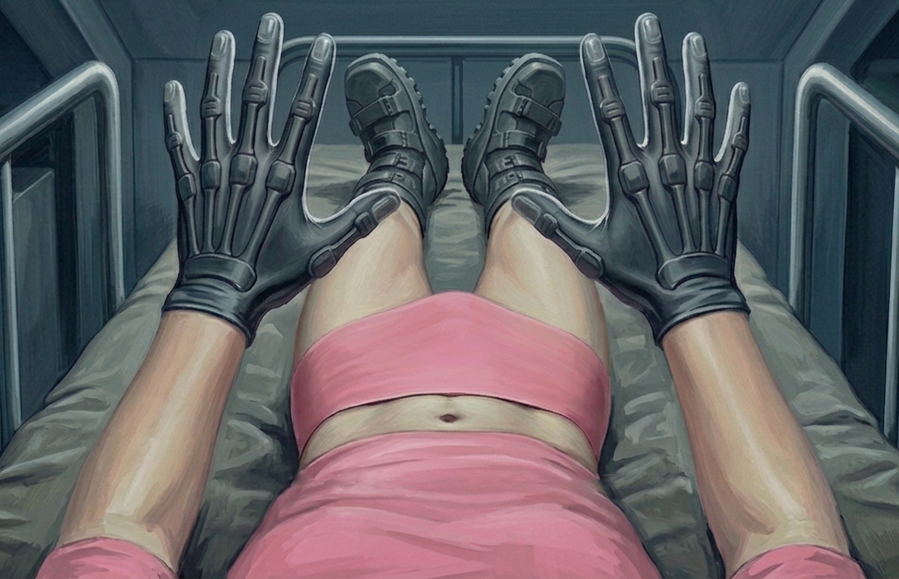
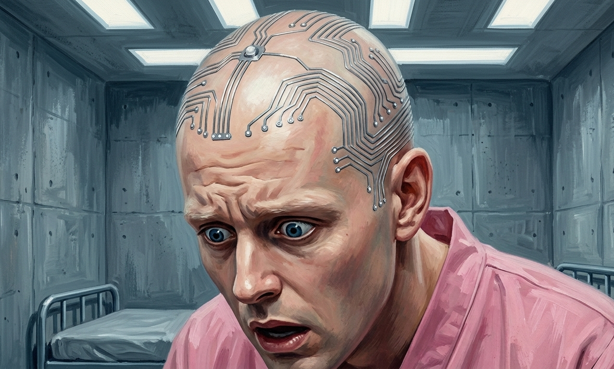
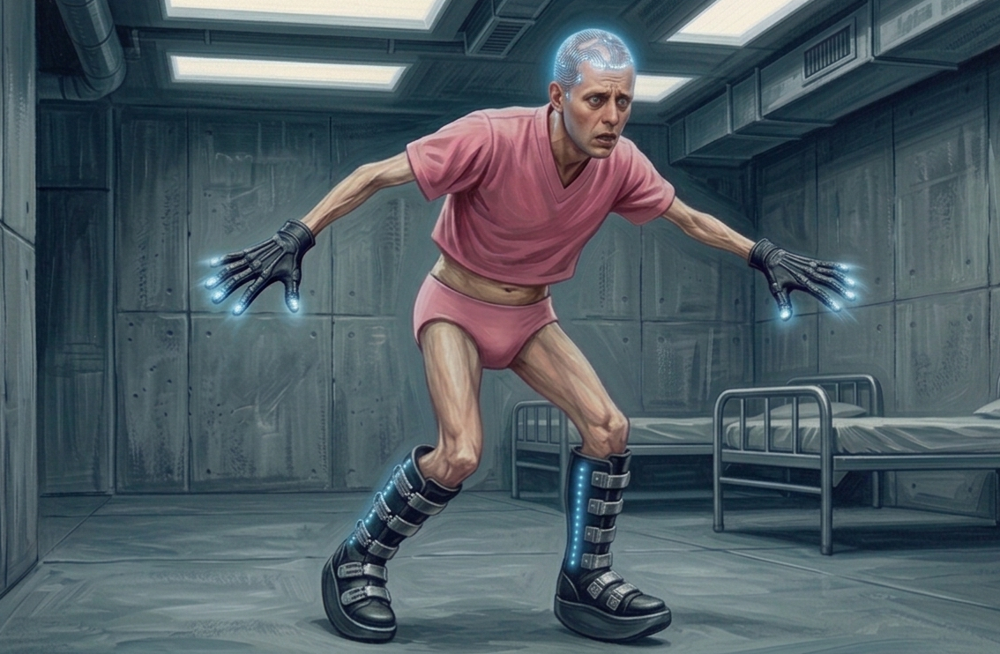
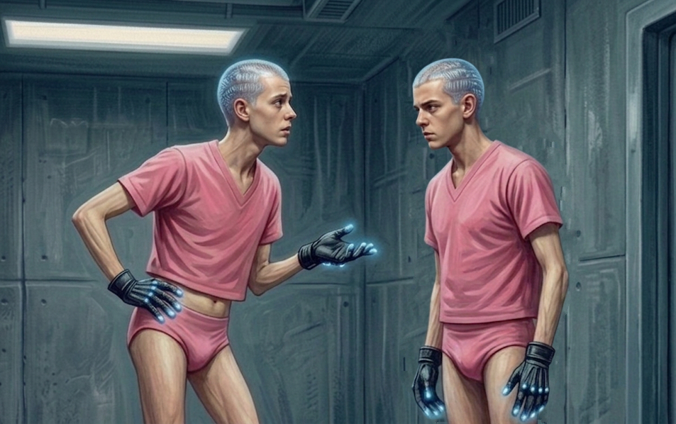

Charlie woke with the nagging feeling that there was something he needed to remember. Something about Vane, something he'd seen, something important, the shape of it still present in his mind even as the content dissolved. He chased it for a moment and found nothing, the sedative having done its work too well, and then he stopped chasing it because something was wrong with his hands.
He had raised them to rub his eyes, the same way he’d rubbed the sleep away every morning of his life. This time it was different. Something was coating his hands that wasn't his skin, a presence pressing back against his palms and fingertips. A gel, cool and slow-moving, shifting when he shifted but not him. He was conscious of it at every point of contact: the webbing between his fingers, the broad flat of his palm, each finger from base to tip.
He blinked against the light and saw them: dark gloves, matte, running from his fingertips to his wrist where they sealed flush against his skin. No seam, no gap, no edge where the material ended and his skin began. Flexible at the palm and joints, stiffer at the back of his hand, rigid sections following the line of each metacarpal bone, the material having opinions about how his hand should move. At the tip of each finger, seated exactly where the nail would sit, a small smooth node, inset with a small unlit LED. He pressed his thumb against one. It did nothing.
Then, out of the corner of his eye, he saw something on his legs. Hard-shelled, matte black like the gloves, running from his foot to halfway up his calf, fastened tightly with a clamped closure. He felt their weight against his calves immediately, but it was the sole that registered wrong, built up enough that even lying flat his heels were elevated, his feet held at an angle his body didn't recognize as rest. His calves were already carrying a tension they hadn't asked for. He shifted his feet and felt his legs move with the boots' weight and not quite how he'd expected, the elevation changing something small but fundamental about where the load went, his ankles tilted, the balls of his feet taking pressure they didn't usually take lying down.
He reached for the closure. His gloved fingers overshot twice before he got them there and found nothing to grip, no release, no mechanism, just a clamped seam that gave nothing. A scattering of LED nodes identical to the ones on his fingers traced down the length of his calf. He worked at the boot longer than was useful and stopped.
Above the boots, his eyes traveled up hairless legs which were bare all the way to his hips. A cropped t-shirt in institutional pink covered his torso, below which he could see a tight-fitting pair of briefs in the same shade. A high waistband, seated firmly against his skin several inches above the hip bone, sealed the briefs to his skin without a seam, just like the gloves.
{kind=link}

The waistband was rigid, a different density from the rest, and held tightly to his body without any give. Below it the material changed. Smooth, pliable, the texture of a filled balloon. He moved one hand down and pressed his gloved palm flat against the front, below the waistband.
There was resistance, but it came from inside rather than from the material itself, something shifting under the surface, redistributing, the way the filling of a stress ball moved when you squeezed it. He pressed harder and felt it travel, the interior contents finding somewhere else to go, and when he released it returned, slow and even, back to where it had been. He moved his palm side to side slowly, looking for some interruption in the surface, some shape or seam or profile, and found none, just the same continuous shell, the same hydraulic give in every direction, seamless and warm and full of something. But more troubling than the pressure was what he felt underneath: silence. The sensation of his own body was absent.
His fingers reached the hip and found a small raised disc, maybe the diameter of a shirt button, flush to the outer surface of the garment. Smooth-edged, precise, recessed slightly at its center, the rim slightly harder than the surrounding material. A port? He could only guess at its function. He held his thumb against it for a moment and then moved his hand back to the front.
He moved two fingers to the inside edge of the leg opening, looking for a gap. The seal was total. He pressed his palm lower and felt nothing where his cock should have been, just the same continuous surface, the same silence. I should be able to feel that. He pressed again.
Then, from inside the garment, a pulse.
Charlie went still.
It came again — slow, even, something running on a schedule — and with it a warmth he hadn't noticed until this moment. Not the ambient warmth of the material against his skin but something interior, something that moved. A slow circulation, a current that shifted against him with each pulse, ebbed, gathered again at the next. He lay there with his hand pressed flat and felt it a third time and then a fourth, and the warmth moved with each one, a lazy pressure that gathered and dissipated and gathered again, and underneath it something pressing against him from inside, a warmth that had no source he could locate, that belonged to nothing he recognized, working in the space where he should have been able to feel himself and finding something else there instead.
A sound from across the room. The slow creak of a cot frame, of weight shifting.
He turned his head. Toad was on his back on the next cot, one arm still over his eyes, wearing the same boots and gloves. Charlie could see he was wearing the same high-waisted pink briefs, a faint opalescent swirl moving just below the surface of the material.
But there was something else.
Across the bare skin of Toad’s scalp, catching the flat fluorescent light at a low angle: fine lines, nearly flush to the skin, following the skull's contours. Metallic tracery. Nodes along the lines at intervals, small unlit LEDs seated in each. At the crown of Toad’s head, a slightly larger node with two traces radiating outward.
They were too fine to be scars and too regular to be anything biological. They followed the contours of the skull the way printed circuits followed a board, branching, precise, running from one node to the next with no wasted distance, no organic deviation. He found his eyes tracing one line from Toad's temple toward the crown, following it as it forked and sent one branch toward the ear and another inward. Once you found the logic you kept finding more of it, the nodes placed not randomly but at intervals that meant something, the branches not wandering but going somewhere, everything intentional, everything permanent. The skin had merged with it completely. No wound, no disruption. Just Toad's skull and the circuitry that was now part of it, flush and settled and there the way bone and skin were there.
{kind=link}

He raised his right hand to his own scalp.
The glove caught twice on the motion until he compensated and got his fingertips to his skull and pressed them carefully and felt the first line before he'd gone two centimeters. He stopped. Thin and hard and flush to the skin, the metal warm even through the gloves, but underneath the warmth a rigidity that didn't yield the way flesh yielded. He moved his finger along its polished metal path. It ran straight for several centimeters and branched without warning, one line continuing toward his temple and another turning inward toward the crown.
He traced the branch toward the crown and found the node, small and smooth and precisely seated, the surrounding skin tight against it, and felt a hum so low it was almost not a hum. He held his fingertip against it and felt something that was not his heartbeat, a flicker of a signal moving through the circuit at intervals. Brief and even, there and gone and there again, sitting behind his eyes in the cage of his own skull.
He found another node. Another. He traced a line from the base of his skull upward and felt it fork three ways and followed each branch until it terminated at something small and hard and faintly humming in his scalp. He found the larger node at the crown and pressed the fingers of both hands against it and felt the flicker stronger here, a brief signal moving through the back of his skull and gone, and then back, even and patient, keeping its own time.
He didn't know what it did. He didn’t know if he wanted to. He knew it was there — in him, running, already warm, already integrated — and that his skull had closed around it and now there was no version of himself that didn't have it. As he lay there it flickered again. Already running. Already doing whatever it was built to do.
"What the FUCK?!?" Jay's shout startled Charlie back to the present. He had sat up on his cot, eyes wide, fingers moving across his scalp in short frantic sweeps, catching on nodes and pushing at them and catching on the next. "Someone help me get it off, there has to be a — there has to be something—"
"There's nothing," Austin said. His own fingers were at the back of his skull, pressing hard at the junction where a trace met a node, feeling for a seam or a clasp or anything that wasn't just metal flush against skin. "It's in our heads. It's not coming off."
"That can't—" Jay pressed harder, fingernails now, dragging across the scalp. "They can't just—"
"Jay." Austin's voice was flat. "Stop."
Jay's hands came down. He sat there breathing.
The noise had brought the others up. One by one they surfaced, each of them going through the same sequence Charlie had: the gloves, the boots, the briefs, their heads. The same route, the same discoveries, arriving at the same places. Nobody said anything until Peter put his glasses on, two fingers pressed to different points on his skull, shifting and measuring. His lips moved when he moved his fingers.
"The placement along here," he said, half to himself, "tracks with the motor cortex. Balance, gait, proprioception — if you were going to interface with any of that, this is where you'd put it." He moved his fingers toward the base of his skull. Pressed, measured. "These I don't know. I can't place them."
"Peter," Hal said, without looking at him. "Please."
"No, please continue, I enjoy listening to your theories, Peter."
Vane. He'd entered while they were focused on their heads and was regarding Peter the way you regarded a precocious child.
"You sonofa—" Austin was trying to get on his feet before the door had finished closing, his coordination still wrong, his legs not completely finding his weight and tipping him backward so the accusation arrived with an ungainly lurch that landed him back on the cot. "You sick piece of shit. You had no right—"
"You couldn't walk," Vane said.
It stopped Austin mid-sentence.
Vane looked around the room without hurry. “The scalp apparatus is quite remarkable, isn’t it? The experimental treatment disrupted your nervous systems — balance, coordination, gait. What's been installed on your heads addresses that directly." He glanced at Peter. "As some of you have partly worked out. Impressive."
At the praise, a brief smile crossed Peter's face before he caught himself.
Vane continued. "The nodes along the motor cortex pathways are monitoring and retraining your gait and balance functions. The circuits accelerate recovery that your nervous systems would otherwise take months to achieve on their own, if they achieved it at all. They interface with the devices on your extremities to restore coordination."
"The boots and gloves," Charlie said.
"Precisely. The boots, as you call them, provide mechanical support while your body regains skeletal strength. The raised heel offloads the pressure on your damaged tendons. And sensors in the sole feed into the scalp circuitry, monitoring how weight transfers through each step." He looked at them steadily. "It will take some time before you walk without effort again, but you will."
“Don’t act like you’re doing us a favor,” Austin spat.
“Perhaps not. But think about all the data we’ll be able to collect. All the paraplegics who will walk again because of you.” He moved on before Austin could respond. "As for the gloves, they address the fine motor deficit. The compound disrupted peripheral nerve transmission through the hands — precision, coordination, the fine control you'd use to write or grip or type. The framework in the gloves maintains the nerve pathways while they repair, running corrective signals through the hands continuously."
“What about… the other thing,” Hal said.
Vane looked at him blankly.
"What we're wearing. Below the waist."
"Ah. You didn’t want ‘piss on the floor,” if I recall. The garment manages waste elimination. It contains a fluid that breaks down bodily waste in a sanitary manner and contains it until it can be removed.”
"So," Hal said. "Diapers."
"A more practical solution than the alternatives. But the fluid will need to be exchanged every few days. There's a port at the hip for that."
Jay was still staring at his hands. The dark matte material, the rigid sections over each knuckle, the nodes at each fingertip with their unlit LEDs. He tried to clasp his hands together and his right overshot his left. "The gloves aren't doing anything. Our hands still don't work."
"They need to be initialized. Along with the boots." Vane looked at his tablet and tapped the screen. "I'll do that now."
The LEDs running the length of Jay's boots lit pale blue-white. Vane gestured for Jay to stand. Jay looked at him, then at his feet, and swung his legs off the cot and stood up.
The boots caught him before he'd finished the motion. The raised heel tipped his weight forward onto the balls of his feet faster than he expected and his arms came out instinctively, the same grab for balance you'd make stepping off a curb in the dark. His hips shifted, pelvis tilting to hold the new center of it, and he stood there with his weight pitched forward and his arms still slightly out, recalibrating.
His scalp lit up.
The nodes fired in sequence, blue-white points pulsing cold along the branching lines, the light tracking from the base of his skull upward and scattering at the temples. It moved when he moved — dimmed when he stilled, brightened when his weight shifted — mechanical and patient.
{kind=link}

Jay registered that every eye in the room was looking at the top of his head. "What?"
"There are lights," Hal said, gesturing at his own head. "In your—"
Jay reached toward his scalp, fingers following the stares.
"In the nodes," Charlie said. "They activate when you move."
Jay's hand stopped, not quite touching. He looked at Charlie. "How does it look."
Charlie didn't answer right away.
"Like something from a movie," Peter said.
Jay lowered his hand. He took a step and his gait was ungainly: weight too far forward, each step a controlled fall that the body caught at the last moment, the hips working to compensate and overshooting slightly. He took three steps toward the wall and three back and stood still and the lights on his head dimmed again.
Vane tapped his tablet again and the gloves came online, the LEDs lighting at Jay's fingertips. Jay's hands, which had been held slightly away from his body with the wariness of someone who'd stopped trusting them, went still. He looked at them. Turned them over. Reached for the frame of the nearest cot and his fingers closed around it cleanly, no overshoot, no correction. He opened his hand and closed it again.
"Okay," he said, mostly to himself. He sat down, clenching and unclenching his fists, the lights pulsing each time he did. "Okay."
Vane made a note. He looked at Peter, then Hal, then Toad, and activated them in sequence, boots, then gloves each time. Each produced the same stumble, the same grasping for balance, the same slow recalibration as the hips found where to hold the new weight.
“Your turn, Charlie.”
Vane activated his boots and Charlie stood.
The heel caught him exactly as it had caught the others. He'd watched it happen four times and it still caught him off guard, the tilt arriving faster than anticipated, weight driving him forward before he'd finished standing. His arms came out. His hips moved without asking him. But that was the surface of it, the visible thing, and underneath something else was happening: the flicker in his skull, which had been running since he woke up at a low idle, shifted register the moment his feet took his weight. Not louder. Different. More present. A pulse that moved in time with his body's adjustments, rising when he was off-balance and easing when he found it, as if something was measuring the gap between where he was and where it wanted him to be.
He took a step. His foot came down and the pulse quickened briefly and his hips swung, not because he'd told them to, but because the swing was what the boots and the circuits between them had decided a step looked like. He stopped. Took another. Same. The hips, the roll of the modified sole, the sense of his own body choosing a motion he hadn't initiated. He stood between the cots and felt the pulse running through the crown of his skull, patient and indifferent, his weight forward on the balls of his feet where it had been put.
Then the gloves came on.
The LEDs at his fingertips lit first, and then the material shifted in quality — the rigid sections that had been constraining his hands flexing against his skin, something that had been holding becoming something that was directing. He curled his fingers. They moved cleanly, each one arriving exactly where he aimed it, the motion completing itself without the half-second of drift and correction he'd been living with. He reached for his left wrist with his right hand and his fingers closed around it on the first attempt. Precise. It was a good feeling, or a relief at least, his hand going where he sent it, but at the same time his fingers closed with a grace that was the glove's, not his. He set his hands in his lap and the gloves settled his fingers into their preferred resting position, and he left them there.
While Charlie was focused on his hands, Vane had moved on to Austin and activated his boots.
Austin had been waiting for this moment and was already moving the instant the LEDs lit. He came off the cot in one motion, both feet hitting the floor at once, the forward drive of a man who had been sitting on something for hours, and the boots caught his weight and pitched him forward and his hips swung automatically and his scalp flashed cold and blue-white.
He covered half the distance to Vane in four steps. Not a run — the boots didn't permit it, each step a barely-controlled pitch forward — but fast enough. He was hurtling across the room and then he wasn’t.
Not a stumble. Not a fall. He'd taken a step and the next one simply wasn't available, his feet planted as if they'd grown into the floor, everything from the ankle down belonging to something that wasn't him. His momentum carried his upper body forward another half-second and then he caught it, standing braced, arms out, the lower half of him fixed and the upper half fully his and useless.
Vane had not moved. He had something in his hand. A compact black remote, held loosely at his side. His thumb was on it.
Austin looked at his feet. At his own legs, locked below him. At Vane.
"Let. Me. Go." he growled.
"When you've settled."
"Let me—"
"You're too valuable to the program to let you injure yourself." He looked at the remote, then back at Austin. "Every member of my staff carries one of these. The door guard has one. The orderlies have one."
He let them all have a moment with that. "We're not going to hurt you. But we're also not going to let you hurt yourself or anyone else."
Austin's jaw worked. He was breathing hard through his nose, hands opening and closing at his sides, the upper half of him straining against a lower half that had simply stopped.
Vane tucked the remote into his breast pocket and returned his gaze to the tablet, leaving Austin fixed in the middle of the floor. "The gait retraining will take several weeks. You'll stop noticing the adjustment before the adjustment stops working." He made a note and stepped towards the door, still ignoring Austin. "Your nervous systems will do most of it. The circuits accelerate what your body already knows how to do."
At the threshold, Vane stopped and tapped the tablet without turning around. "I've adjusted your boots to set a maximum stride length. A precaution, following Austin's demonstration just now. It will ensure none of you try something similar again.”
The heavy lock of the door engaged and Austin's feet came unstuck. He stumbled forward and his leg pulled short, a step half the length he'd intended, and his hip swung out hard to fill the gap. He took another. The same: the stride cutting short, the hip compensating with a rolling arc, his weight rocking side to side. He stood still and looked at his own legs for a moment, then walked back to his cot in the gait the boots had decided was his now, short and rolling, hips moving with each step.
Over the next quarter hour, the shock curdled into something more like investigation. Without discussing it, the boys began moving through the room, testing the limits of what had been installed onto them. Fingers pressed to scalp nodes and held there, tracking the low hum from temple to crown, watching each other’s LEDs fire cold along the traces. They wiggled their fingers inside the gloves and found their hands responsive, but prone to unwanted flourish and grace in every movement. They walked the length of the room and back, hips swinging with each hobbled stride, and found that nothing in the room was as close as it used to be.
Charlie stood and paced the room because there was nothing else to do. He felt it on the first step. Not a stop, a pull, like a rubber band strung between his boots running out of give, his stride curtailed mid-extension and his hip swinging out to take up what the leg couldn't finish. He counted the steps to the wall. Counted them back. Twice what it should have been, the room suddenly twice the size. He stood there and felt the circuit in his skull register his stillness and slow, and thought about everything that had been adjusted in him without his participation.
Austin was on his cot, watching the others, the nodes across his scalp ticking their slow blue. "We've got to get the fuck out of here."
"He froze you from across the room in under a second," Jay said. "And every guard out there has one of those things. So even if we got through the door—"
"So we need to get away before they can use it." Austin stood and crossed to the door, put both hands on the frame, lights on his skull blinking in rhythm. “Maybe there’s a maximum range."
"Get away. In these?" Hal gestured at his boots. “What are we going to do, swish out of here?”
Austin's jaw worked. He stayed at the door, one hand on the frame, and Charlie could see him running the same loop he'd been running — the remote, the breast pocket, the two steps that hadn't been enough — and coming back to the same place each time.
Peter pushed his glasses up. "If I may—"
"Don't," Austin said.
"—we shouldn't overlook the fact—"
"Peter," Hal said.
"—that he's the only person who knows exactly what he did to us. If there's any path back to something like—"
"Not a chance." Jay. Flat, final.
"You can't rule it out."
"I know I'm not sitting in this room waiting for the man who put us here to decide he's done with us. I know that." Austin looked at Peter steadily. "We get out. We get to the police. We find a doctor who can fix us. We don't need Vane to undo Vane."
Peter cleared his throat. "You don’t know that. The technology here is far beyond anything I’ve ever seen."
“Peter’s not wro—” Charlie managed before he felt his right hand move. He had turned to join the conversation and had meant to put his hands at his sides but found that his right hand had landed on his hip instead, the fingers settling there in a way he hadn't produced, the wrist at an angle that wasn't his. He looked down at it, frowned, and moved it back to his side. It did what he wanted it to, but the movement took mental effort.
Hal had jumped into the gap in the conversation Charlie had left. "Are you nuts? We’ve got fucking wires in our heads. He may be fixing us, but I don’t think he knows how to make us right again.”
Peter looked at the floor. "I'm not saying trust him. I'm saying he might be our best option right now.”
Charlie pressed the heel of his boot against the floor and felt the pulse in his skull register the change in weight, trying and failing to find something to say to defuse the situation. He looked at the cot frame beside him. Tubular steel, same as all of them, same frame he'd been lying on for days.
His mind pulled at him. Something was wrong.
He'd bashed his kneecap into that frame in the first chaotic hours of captivity, hard enough that he'd sworn and grabbed it. He remembered because the pain had been a relief, something immediate and physical in the middle of everything else. The frame had caught him just above the knee.
He leaned against it now and the contact was wrong. Too high.
He looked at his boots — the odd, raised heel adding several inches to his stature — and knew he should be taller wearing them. The cot should now be below his knee.
The frame pressed into him in the middle of his thigh.
He stood very still. Peter, across the room, had stopped talking. He was watching Charlie.
Charlie straightened up and looked at Austin, standing with his back against the far wall. At the doorframe behind him. At where Austin's head came to against it. Something was pulling at the edge of the picture and he couldn't place it for a moment and then he could.
He crossed the room with the tilted, compensating gait the boots made of all of them, hips swinging with each step, taking twice as many to get anywhere he wanted to go. He stopped directly in front of Austin and looked at him. His weight settled to one leg, his hip sharply cocked to one side, his right knee slightly bent, his body having found rest in a new position that he hadn’t consciously arranged because his attention was already somewhere else entirely.
They were eye to eye.
Austin, who had been six feet tall since sophomore year of high school.
Charlie, who had never topped five-eight.
{kind=link}

Austin looked back at him. Charlie watched it land — the slight widening of the eyes, the jaw loosening — Austin running the same numbers Charlie was running, from the other side of them. Neither of them said anything. Austin looked away first, to the doorframe, measuring himself against it in the way Charlie had measured himself against the cot. Whatever he found there he kept to himself. He looked back at Charlie, and then away again, and his expression had closed around something he wasn't ready to say.
Toad stood up from his cot and walked over, and the moment he was upright Charlie felt something shift. Yesterday Toad had been close to his height, maybe a fraction below, close enough that the difference had never registered. Now he crossed the room and stopped and Charlie felt the nearness of him differently. Not just taller. More present. Taking up more of the space directly in front of him, his shoulders wider in Charlie's field of vision than they should have been, his face above Charlie's eyeline in a way that pulled at something old and instinctive. Charlie's chin came up slightly without him asking it to.
Jay joined them without being asked, drawn by whatever was happening, and he was the same, looking down at Charlie and at Austin from a height he should not have had over either of them.
"What's going on," Hal said from his cot.
Charlie looked at Austin. Austin looked at the doorframe. He swallowed.
"We've shrunk," Austin said. "Several inches."
"That's — that's not possible," Peter said from across the room, rising from his cot and walking over.
"Impossible doesn't seem like much of a problem around here," Hal responded dryly as he also joined them.
They arranged themselves loosely around Charlie and Austin and the space between them contracted.
Charlie was used to being shorter than other guys. But being below-average height had never felt like this. What he felt now was something he could feel in himself without looking at anyone, in the reduced frame of his own body, in the way his stride had been cut and the room had doubled in size and now the people in it had expanded to fill the rest. He had been made smaller in every direction at once.
He looked at Austin.
Austin's eyes were moving, but not to any of the exits and obstacles he'd spent every waking hour cataloguing. They were moving from face to face, tracking the boys standing around him the way you tracked a threat assessment — height, reach, mass — his jaw going tight as each one registered. Toad. Jay. Hal. Peter. The inventory taking shape in real time, the conclusion forming behind his eyes before he'd finished making it.
Austin had been the biggest person in every room he'd ever walked into. Now he was looking up at Toad. At Jay. At Peter, who had never intimidated anyone. His chest rose and fell. His eyes went to Charlie last and stayed there, and in them Charlie saw something he'd never seen in Austin's face before — not anger, not calculation — just a raw and unguarded animal panic, the look of something that had just understood the size of its enclosure for the first time.
Charlie watched Austin's shoulders slump forward, the muscles of his jaw release. From the moment they'd been locked in together, Austin had given off the quality of a coiled spring. Always looking at the door, always measuring, always striking out whenever something came within reach. He'd charged Vane the instant his boots activated. Even locked in place by the remote he'd strained against it.
If any of that was left in Austin, Charlie couldn’t find it anymore. It was as if the fight had gone out of him along with his height. Austin was looking at nothing in particular, not the door, not the next obstacle. For the first time since they'd been taken, Austin didn't look like an animal in a cage. He looked like one that had stopped trying to get out. He looked… domesticated.